Matrix Sans is family of free and open-source fonts based on the classic 5×7 dot matrix. It was created to meet the need for better fonts in this perennial style, which is so evocative of tech.
What distinguishes Matrix Sans from other “pixel” fonts:
- Careful design: borrowing the best features from historical examples while ensuring consistency and legibility
- Character repertoire: each font contains over 2000 glyphs, supporting over 700 languages
- OpenType features: kerning, mark positioning, small capitals, localised features and more
- Versatility: in addition to classic pixel fonts, it includes various styles inspired by retro technologies
- Quality control: the Fontspector test suite is used to ensure adherence to official standards and best practices
- Copyleft: Matrix Sans is available under the SIL Open Font License; follow the link for the full licence text and FAQ
Meet the family.
Matrix Sans comes in six main variants, each with matching monospaced and small-caps versions:
Regular.
Matrix Sans Regular has a plain pixelated look, like the bitmap fonts used in retro games.
Video.
Matrix Sans Video is interpolated to double the resolution, mimicking VCRs and camcorders from the days of analogue video.
Screen.
Matrix Sans Screen has discrete square dots that make it resemble a character LCD or electronic sign.
Print.
Matrix Sans Print has discrete round dots giving it the look of a dot-matrix printer or flip-dot display.
Raster.
Matrix Sans Raster has soft lines, emulating a monochrome CRT monitor from the days of 8-bit computers.
Smooth.
Matrix Sans Smooth has perfectly straight diagonals instead of jagged steps, putting a modern twist on the genre.
Matrix Mono.
Every style above is also available in the Matrix Mono family, a monospaced companion to Matrix Sans.
SC.
Every abovementioned font comes in an “SC” version where the lowercase letters are replaced by small capitals. Use these wherever you want small caps but can’t use the OpenType smcp feature.
Features.
Supported characters.
Latin
- Capital
- A B C D E F G H I J K L M N O P Q R S T U V W X Y Z Á Ă Ắ Ặ Ằ Ẳ Ẵ Ǎ  Ấ Ậ Ầ Ẩ Ẫ Ä Ạ À Ả Ā Ą Å Ǻ Ⱥ à Ɐ Æ Ǽ Ɑ Ɒ Ɓ Ꞵ Ć Č Ç Ĉ Ċ Ȼ Ꭓ Ď Ḍ Ɗ Ḏ Đ Ɖ Ð É Ĕ Ě Ê Ế Ệ Ề Ể Ễ Ë Ė Ẹ Ȅ È Ẻ Ē Ḗ Ḕ Ę Ẽ Ɛ Ɜ Ə Ƒ Ğ Ǧ Ģ Ĝ Ġ Ḡ Ǥ Ɡ Ɠ Ɣ Ɂ Ḫ Ȟ Ĥ Ḥ Ħ Ɥ Ɦ Í Ĭ Ǐ Î Ï İ Ị Ì Ỉ Ī Į Ɨ Ĩ Ɪ IJ Ɩ Ĵ Ʝ Ḱ Ǩ Ķ Ḳ Ƙ Ḵ Ĺ Ƚ Ɬ Ľ Ļ Ḷ Ḹ Ḻ Ŀ Ɫ Ł Ḿ Ṃ Ɱ Ɯ Ń Ň Ņ Ṅ Ṇ Ǹ Ɲ Ṉ Ñ ᴺ Ŋ Ó Ŏ Ǒ Ô Ố Ộ Ồ Ổ Ỗ Ö Ọ Ő Ò Ỏ Ơ Ớ Ợ Ờ Ở Ỡ Ō Ṓ Ṑ Ɵ Ǫ Ǭ Ø Ǿ Õ Ɔ Œ Ŕ Ř Ŗ Ṛ Ṝ Ṟ Ɽ Ʀ Ś Š Ş Ŝ Ș Ṡ Ṣ Ʂ Ʃ ẞ Ť Ţ Ț Ⱦ Ṭ Ṯ Ŧ Ʈ Þ Ú Ŭ Ǔ Û Ü Ǘ Ǚ Ǜ Ǖ Ụ Ű Ù Ủ Ư Ứ Ự Ừ Ử Ữ Ū Ų Ů Ũ Ʉ Ʊ Ʌ Ʋ Ẃ Ŵ Ẅ Ẁ Ý Ŷ Ÿ Ẏ Ỵ Ỳ Ƴ Ỷ Ȳ Ỹ Ź Ž Ẑ Ż Ẓ Ẕ Ʒ Ǯ Ꞌ
- Small
- a b c d e f g h i j k l m n o p q r s t u v w x y z á ă ắ ặ ằ ẳ ẵ ǎ â ấ ậ ầ ẩ ẫ ä ạ à ả ā ą å ǻ ⱥ ã ɐ ª æ ǽ ɑ ɒ ɓ ᵬ ʙ ꞵ ć č ç ĉ ċ ȼ ɕ ꭓ ď ḍ ɗ ḏ đ ɖ ᵭ ð é ĕ ě ê ế ệ ề ể ễ ë ė ẹ ȅ è ẻ ē ḗ ḕ ę ẽ ɘ ɛ ɜ ɝ ɞ ə ɚ ƒ ᵮ ɸ ff ffi ffl fi fl ğ ǧ ģ ĝ ġ ḡ ǥ ɡ ɠ ɢ ʛ ɣ ɤ ˠ ɂ ḫ ȟ ĥ ḥ ẖ ħ ɥ ɦ ɧ ʜ ʰ í ĭ ǐ î ï ị ì ỉ ī į ɨ ĩ ı ɪ ij ɩ ǰ ĵ ȷ ʝ ɟ ʄ ʲ ḱ ǩ ķ ḳ ƙ ḵ ĸ ĺ ƚ ɬ ľ ļ ḷ ḹ ḻ ŀ ɫ ł ɭ ɮ ʟ ˡ ƛ ḿ ṃ ɱ ɯ ɰ ᵯ ʼn ń ň ņ ṅ ṇ ǹ ɲ ṉ ñ ɳ ᵰ ⁿ ɴ ŋ ó ŏ ǒ ô ố ộ ồ ổ ỗ ö ọ ő ò ỏ ơ ớ ợ ờ ở ỡ ō ṓ ṑ ɵ ǫ ǭ ø ǿ õ º œ ɶ ɔ ᵱ ŕ ř ŗ ṛ ṝ ṟ ɹ ɺ ɻ ɽ ɾ ᵲ ᵳ ʀ ʁ ś š ş ŝ ș ṡ ṣ ʂ ᵴ ʃ ſ ß ť ţ ț ẗ ⱦ ṭ ṯ ŧ ʈ ᵵ þ ú ŭ ǔ û ü ǘ ǚ ǜ ǖ ụ ű ù ủ ư ứ ự ừ ử ữ ū ų ů ũ ʉ ʊ ʌ ʋ ẃ ŵ ẅ ẁ ʍ ʷ ý ŷ ÿ ẏ ỵ ỳ ƴ ỷ ȳ ỹ ʎ ʏ ʸ ź ž ẑ ż ẓ ẕ ʐ ʑ ᵶ ᶻ ʒ ǯ ꞌ ǀ ǁ ǂ ǃ ʘ ʔ ʕ ʡ ʢ ˀ ˁ
- Small capital
- a b c d e f g h i j k l m n o p q r s t u v w x y z á ă ắ ặ ằ ẳ ẵ ǎ â ấ ậ ầ ẩ ẫ ä ạ à ả ā ą å ǻ ⱥ ã ɐ æ ǽ ɑ ɒ ɓ ꞵ ć č ç ĉ ċ ȼ ꭓ ď ḍ ɗ ḏ đ ɖ ð é ĕ ě ê ế ệ ề ể ễ ë ė ẹ ȅ è ẻ ē ḗ ḕ ę ẽ ɛ ɜ ə ƒ ğ ǧ ģ ĝ ġ ḡ ǥ ɡ ɠ ɣ ɤ ɂ ḫ ȟ ĥ ḥ ħ ɥ ɦ í ĭ ǐ î ï i̇ ị ì ỉ ī į ɨ ĩ ɪ ij ɩ ĵ ʝ ḱ ǩ ķ ḳ ƙ ḵ ĺ ƚ ɬ ľ ļ ḷ ḹ ḻ ŀ ɫ ł ƛ ḿ ṃ ɱ ɯ ń ň ņ ṅ ṇ ǹ ɲ ṉ ñ ŋ ó ŏ ǒ ô ố ộ ồ ổ ỗ ö ọ ő ò ỏ ơ ớ ợ ờ ở ỡ ō ṓ ṑ ɵ ǫ ǭ ø ǿ õ ɔ œ ŕ ř ŗ ṛ ṝ ṟ ɽ ʀ ś š ş ŝ ș ṡ ṣ ʂ ʃ ß ť ţ ț ⱦ ṭ ṯ ŧ ʈ þ ú ŭ ǔ û ü ǘ ǚ ǜ ǖ ụ ű ù ủ ư ứ ự ừ ử ữ ū ų ů ũ ʉ ʊ ʌ ʋ ẃ ŵ ẅ ẁ ý ŷ ÿ ẏ ỵ ỳ ƴ ỷ ȳ ỹ ź ž ẑ ż ẓ ẕ ʒ ǯ ꞌ
Armenian
- Capital
- Ա Բ Գ Դ Ե Զ Է Ը Թ Ժ Ի Լ Խ Ծ Կ Հ Ձ Ղ Ճ Մ Յ Ն Շ Ո Չ Պ Ջ Ռ Ս Վ Տ Ր Ց Ւ Փ Ք Օ Ֆ
- Small
- ՠ ա բ գ դ ե զ է ը թ ժ ի լ խ ծ կ հ ձ ղ ճ մ յ ն շ ո չ պ ջ ռ ս վ տ ր ց ւ փ ք օ ֆ և ֈ ﬓ ﬔ ﬕ ﬖ ﬗ
- Small capital
- ՠ ա բ գ դ ե զ է ը թ ժ ի լ խ ծ կ հ ձ ղ ճ մ յ ն շ ո չ պ ջ ռ ս վ տ ր ց ւ փ ք օ ֆ և ֈ
- Punctuation & symbols
- ՙ ՚ ՛ ՜ ՝ ՞ ՟ ։ ֊ ֍ ֎
Cyrillic
- Capital
- А Б В Г Д Е Ж З И Й К Л М Н О П Р С Т У Ф Х Ц Ч Ш Щ Ъ Ы Ь Э Ю Я Ӓ Ӑ Ѓ Ғ Ӻ Ґ Ҕ Ӷ Ѐ Ё Ӗ Ә Ӛ Ӝ Ӂ Җ Ӟ Ҙ Ԑ Ѕ Ӡ Џ Ѝ Ӥ Ӣ Ҋ І Ї Ј Ҟ Ӄ Ҝ Ҡ Ќ Қ Ԯ Ԓ Љ Ӆ Ӎ Ԩ Ң Ҥ Һ Ԧ Ӈ Њ Ӊ Ӧ Ө Ӫ Ӏ Ԥ Ҧ Ҏ Ҫ Ђ Ҭ Ћ Ӱ Ў Ӯ Ӳ Ү Ұ Ӽ Ҩ Ӿ Ҳ Ҵ Ҷ Ҹ Ӵ Ӌ Ҽ Ҿ Ӹ Ҍ Є Ӭ Ѣ Ѫ Ѳ Ѵ Ӕ Ԛ Ԝ
- Small
- а б в г д е ж з и й к л м н о п р с т у ф х ц ч ш щ ъ ы ь э ю я ӓ ӑ ѓ ғ ӻ ґ ҕ ӷ ѐ ё ӗ ә ӛ ӝ ӂ җ ӟ ҙ ԑ ѕ ӡ џ ѝ ӥ ӣ ҋ і ї ј ҟ ӄ ҝ ҡ ќ қ ԯ ԓ љ ӆ ӎ ԩ ң ҥ һ ԧ ӈ њ ӊ ӧ ө ӫ ӏ ԥ ҧ ҏ ҫ ђ ҭ ћ ӱ ў ӯ ӳ ү ұ ҩ ӽ ӿ ҳ ҵ ҷ ҹ ӵ ӌ ҽ ҿ ӹ ҍ є ӭ ѣ ѫ ѳ ѵ ӕ ԛ ԝ
- Small capital
- а б в г д е ж з и й к л м н о п р с т у ф х ц ч ш щ ъ ы ь э ю я ӓ ӑ ѓ ғ ӻ ґ ҕ ӷ ѐ ё ӗ ә ӛ ӝ ӂ җ ӟ ҙ ԑ ѕ ӡ џ ѝ ӥ ӣ ҋ і ї ј ҟ ӄ ҝ ҡ ќ қ ԯ ԓ љ ӆ ӎ ԩ ң ҥ һ ԧ ӈ њ ӊ ӧ ө ӫ ӏ ԥ ҧ ҏ ҫ ђ ҭ ћ ӱ ў ӯ ӳ ү ұ ҩ ӽ ӿ ҳ ҵ ҷ ҹ ӵ ӌ ҽ ҿ ӹ ҍ є ӭ ѣ ѫ ѳ ѵ ӕ ԛ ԝ
Deseret
- Capital
- 𐐀 𐐁 𐐂 𐐃 𐐄 𐐅 𐐆 𐐇 𐐈 𐐉 𐐊 𐐋 𐐌 𐐍 𐐎 𐐏 𐐐 𐐑 𐐒 𐐓 𐐔 𐐕 𐐖 𐐗 𐐘 𐐙 𐐚 𐐛 𐐜 𐐝 𐐞 𐐟 𐐠 𐐡 𐐢 𐐣 𐐤 𐐥 𐐦 𐐧
- Small
- 𐐨 𐐩 𐐪 𐐫 𐐬 𐐭 𐐮 𐐯 𐐰 𐐱 𐐲 𐐳 𐐴 𐐵 𐐶 𐐷 𐐸 𐐹 𐐺 𐐻 𐐼 𐐽 𐐾 𐐿 𐑀 𐑁 𐑂 𐑃 𐑄 𐑅 𐑆 𐑇 𐑈 𐑉 𐑊 𐑋 𐑌 𐑍 𐑎 𐑏
Georgian
- Mkhedruli
- ა ბ გ დ ე ვ ზ თ ი კ ლ მ ნ ო პ ჟ რ ს ტ უ ფ ქ ღ ყ შ ჩ ც ძ წ ჭ ხ ჯ ჰ ჱ ჲ ჳ ჴ ჵ ჶ ჷ ჸ ჹ ჺ ჼ ჽ ჾ ჿ
- Mkhedruli mtavruli
- Ა Ბ Გ Დ Ე Ვ Ზ Თ Ი Კ Ლ Მ Ნ Ო Პ Ჟ Რ Ს Ტ Უ Ფ Ქ Ღ Ყ Შ Ჩ Ც Ძ Წ Ჭ Ხ Ჯ Ჰ Ჱ Ჲ Ჳ Ჴ Ჵ Ჶ Ჷ Ჸ Ჹ Ჺ Ჽ Ჾ Ჿ
- Asomtavruli
- Ⴀ Ⴁ Ⴂ Ⴃ Ⴄ Ⴅ Ⴆ Ⴇ Ⴈ Ⴉ Ⴊ Ⴋ Ⴌ Ⴍ Ⴎ Ⴏ Ⴐ Ⴑ Ⴒ Ⴓ Ⴔ Ⴕ Ⴖ Ⴗ Ⴘ Ⴙ Ⴚ Ⴛ Ⴜ Ⴝ Ⴞ Ⴟ Ⴠ Ⴡ Ⴢ Ⴣ Ⴤ Ⴥ Ⴧ Ⴭ
- Nuskhuri
- ⴀ ⴁ ⴂ ⴃ ⴄ ⴅ ⴆ ⴇ ⴈ ⴉ ⴊ ⴋ ⴌ ⴍ ⴎ ⴏ ⴐ ⴑ ⴒ ⴓ ⴔ ⴕ ⴖ ⴗ ⴘ ⴙ ⴚ ⴛ ⴜ ⴝ ⴞ ⴟ ⴠ ⴡ ⴢ ⴣ ⴤ ⴥ ⴧ ⴭ
Greek
- Capital
- Α Β Γ Δ Ε Ζ Η Θ Ι Κ Λ Μ Ν Ξ Ο Π Ρ Σ Τ Υ Φ Χ Ψ Ω Ά Έ Ή ϴ Ί Ϊ Ό Ύ Ϋ ϓ ϔ ϒ Ώ Ϝ Ϟ Ϙ Ϡ Ͳ Ϛ Ϗ
- Small
- α β γ δ ε ζ η θ ι κ λ μ ν ξ ο π ρ ς σ τ υ φ χ ψ ω ά ϐ έ ϵ ϶ ή ϑ ί ϊ ΐ ό ϖ ϱ ϼ ύ ϋ ΰ ϕ ώ ϗ ϰ ϝ ϟ ϙ ϡ ͳ ϛ
- Small capital
- α β γ δ ε ζ η θ ι κ λ μ ν ξ ο π ρ ς σ τ υ φ χ ψ ω ά ϐ έ ϵ ϶ ή ϑ ί ϊ ΐ ό ϖ ϱ ϼ ύ ϋ ΰ ϕ ώ ϗ ϰ ϝ ϟ ϙ ϡ ͳ ϛ
- Symbols
- ͵ ΄ ᶿ
Hebrew
־ ׃ א ב ג ד ה ו ז ח ט י ך כ ל ם מ ן נ ס ע ף פ ץ צ ק ר ש ת ׳ ״ ﬩
Kanji/Hànzì
円 土 年 日 月 木 水 火 金
Katakana (Halfwidth)
｡ ｢ ｣ ､ ･ ｰ ｦ ｧ ｨ ｩ ｪ ｫ ｬ ｭ ｮ ｯ ｱ ｲ ｳ ｴ ｵ ｶ ｷ ｸ ｹ ｺ ｻ ｼ ｽ ｾ ｿ ﾀ ﾁ ﾂ ﾃ ﾄ ﾅ ﾆ ﾇ ﾈ ﾉ ﾊ ﾋ ﾌ ﾍ ﾎ ﾏ ﾐ ﾑ ﾒ ﾓ ﾔ ﾕ ﾖ ﾗ ﾘ ﾙ ﾚ ﾛ ﾜ ﾝ ﾞ ﾟ
Lisu/Fraser
ꓐ ꓑ ꓒ ꓓ ꓔ ꓕ ꓖ ꓗ ꓘ ꓙ ꓚ ꓛ ꓜ ꓝ ꓞ ꓟ ꓠ ꓡ ꓢ ꓣ ꓤ ꓥ ꓦ ꓧ ꓨ ꓩ ꓪ ꓫ ꓬ ꓭ ꓮ ꓯ ꓰ ꓱ ꓲ ꓳ ꓴ ꓵ ꓶ ꓷ 𑾰 ꓸ ꓹ ꓺ ꓻ ꓼ ꓽ ꓾ ꓿
Shavian
𐑐 𐑚 𐑑 𐑛 𐑒 𐑜 𐑓 𐑝 𐑔 𐑞 𐑕 𐑟 𐑖 𐑠 𐑗 𐑡 𐑘 𐑢 𐑙 𐑣 𐑤 𐑮 𐑥 𐑯 𐑦 𐑰 𐑧 𐑱 𐑨 𐑲 𐑩 𐑳 𐑪 𐑴 𐑫 𐑵 𐑬 𐑶 𐑭 𐑷 𐑸 𐑹 𐑺 𐑻 𐑼 𐑽 𐑾 𐑿
Thai
- Base glyphs
- ก ข ฃ ค ฅ ฆ ง จ ฉ ช ซ ฌ ญ ฎ ฏ ฐ ฑ ฒ ณ ด ต ถ ท ธ น บ ป ผ ฝ พ ฟ ภ ม ย ร ฤ ล ฦ ว ศ ษ ส ห ฬ อ ฮ ฯ ะ า เ แ โ ใ ไ ๅ ๆ ๏ ๚ ๛
- Combining marks
- ◌ั ◌ำ ◌ิ ◌ี ◌ึ ◌ื ◌ุ ◌ู ◌ฺ ◌็ ◌่ ◌้ ◌๊ ◌๋ ◌์ ◌ํ ◌๎
Tifinagh
ⴰ ⴱ ⴲ ⴳ ⴴ ⴵ ⴶ ⴷ ⴸ ⴹ ⴺ ⴻ ⴼ ⴽ ⴾ ⴿ ⵀ ⵁ ⵂ ⵃ ⵄ ⵅ ⵆ ⵇ ⵈ ⵉ ⵊ ⵋ ⵌ ⵍ ⵎ ⵏ ⵐ ⵑ ⵒ ⵓ ⵔ ⵕ ⵖ ⵗ ⵘ ⵙ ⵚ ⵛ ⵜ ⵝ ⵞ ⵟ ⵠ ⵡ ⵢ ⵣ ⵤ ⵥ ⵦ ⵧ ⵯ ⵰
Numbers
- Western Arabic numerals
- 0 1 2 3 4 5 6 7 8 9
- Thai numerals
- ๐ ๑ ๒ ๓ ๔ ๕ ๖ ๗ ๘ ๙
- Subscript/inferior
- ₀ ₁ ₂ ₃ ₄ ₅ ₆ ₇ ₈ ₉
- Superscript/superior
- ⁰ ¹ ² ³ ⁴ ⁵ ⁶ ⁷ ⁸ ⁹
- Fractions
- ½ ⅓ ⅔ ¼ ¾ ⅛ ⅜ ⅝ ⅞
Punctuation
! " ' ( ) , - . / : ; ? [ \ ] { } ¡ « · ¿ » ; ‐ ‑ ‒ – — ― ‖ ‘ ’ ‚ ‛ “ ” „ • ․ … ‹ › ‽ ⟨ ⟩ ⸘ ⸰ ⸱ 《 》
Symbols
- Currency
- $ ¢ £ ¤ ¥ ֏ ฿ ₡ ₣ ₤ ₦ ₧ ₨ ₩ ₪ ₫ € ₭ ₮ ₱ ₲ ₴ ₵ ₸ ₹ ₺ ₼ ₽ ₾ ₿ ⃀
- Mathematics
- % + < = > ¬ ° ± µ × ÷ ‰ ′ ″ ⁄ ⁺ ⁻ ⁼ ⁽ ⁾ ₊ ₋ ₌ ₍ ₎ Ω ∂ ∅ ∆ ∏ ∑ − ∕ ∙ √ ∞ ∫ ≈ ≠ ≤ ≥
- Arrows
- ← ↑ → ↓ ↔ ↕ ↖ ↗ ↘ ↙
- Shapes
- ⏏ ⏩ ⏪ ⏸ ⏹ ⏺ ■ □ ▪ ▫ ▲ △ ▴ ▵ ▶ ▷ ▸ ▹ ▼ ▽ ▾ ▿ ◀ ◁ ◂ ◃ ◆ ◇ ◊ ○ ● ◦
- Diacritics
- ^ ` ~ ¨ ¯ ´ ¸ ʹ ʻ ʼ ʽ ʾ ʿ ˆ ˇ ˈ ˉ ˊ ˋ ˌ ˍ ː ˑ ˗ ˘ ˙ ˚ ˛ ˜ ˝ ˮ ꜛ ꜜ ◌́ ◌̂ ◌̃ ◌̄ ◌̆ ◌̇ ◌̈ ◌̉ ◌̊ ◌̋ ◌̌ ◌̍ ◌̒ ◌̓ ◌̕ ◌̛ ◌̣ ◌̤ ◌̦ ◌̧ ◌̨ ◌̩ ◌̮ ◌̱ ◌̲ ◌̵ ◌͘ ΅
- Miscellaneous
- # & * @ _ | ¦ § © ® ¶ ʹ · ჻ † ‡ ⁚ ℅ ℓ № ℗ ℠ ™ ℮ ⅄ Ⓓ ♠ ♣ ♥ ♦ ◌
Supported languages.
Languages with at least 10,000,000 speakers
Belarusian, Cebuano, Czech, Dutch, English, Fanti, Filipino, French, German, Hakka Chinese (Latin), Hausa, Hungarian, Igbo, Iloko, Indonesian, Italian, Javanese, Kazakh, Kinyarwanda, Kituba, Low German, Madurese, Malagasy, Malay (Latin), Nigerian Fulfulde, Nigerian Pidgin, Nyanja, Oromo, Polish, Portuguese, Quechua, Romanian, Russian, Shona, Somali, Spanish, Sudanese Arabic, Sundanese, Swahili, Swahili (Congo), Swedish, Thai, Turkish, Turkmen (Latin), Ukrainian, Uzbek, Vietnamese, Wolof, Xhosa, Yoruba, Zulu
Languages with at least 1,000,000 speakers
Abron, Achinese, Acoli, Afar, Afrikaans, Albanian, Anaang, Anyin, Arabic (Chadian Spoken), Armenian, Aymara, Azerbaijani, Azerbaijani (Cyrillic), Baatonum, Balinese, Bambara, Banjar, Baoulé, Bashkir, Basque, Batak Toba, Bedawiyet, Bemba, Berom, Bikol, Bini, Bissa, Bosnian, Bosnian (Cyrillic), Buginese, Bulgarian, Bulu, Catalan, Cebaara Senoufo, Central Atlas Tamazight, Central-Eastern Niger Fulfulde, Chiga, Chokwe, Chuvash, Croatian, Dagbani, Danish, Dinka, Dyula, Ebira, Efik, Ewe, Finnish, Fon, Frafra, Fulah, Fulfulde (Adamawa), Fulfulde (Western Niger), Fur, Galician, Gamo, Ganda, Georgian, Gheg Albanian, Guarani, Gun, Gusii, Hadiyya, Haitian Creole, Hiligaynon, Hmong, Ibibio, Iraqw, Jamaican Creole English, Kabardian, Kabyle, Kalenjin, Kamba, Khasi, Kikuyu, Kimbundu, Kongo, Konjo, Kpelle, Krio, Kyrgyz, Kʼicheʼ, Lango (Uganda), Latvian, Lingala, Lithuanian, Lomwe, Lozi, Luba-Katanga, Luba-Lulua, Lugbara, Lunda, Luo, Luyia, Maasina Fulfulde, Macedonian, Mafa, Makhuwa, Makhuwa-Meetto, Makonde, Mandinka, Maninkakan (Eastern), Masaaba, Masai, Mende, Meru, Minangkabau, Mongolian, Morisyen, Mossi, Ndau, North Ndebele, Northern Sotho, Norwegian, Norwegian Bokmål, Norwegian Nynorsk, Nuer, Nupe-Nupe-Tako, Nyamwezi, Nyankole, Nyemba, Occitan, Pampanga, Pulaar, Pular, Ronga, Rundi, Sango, Sardinian, Scots, Sena, Serbian, Serbian (Latin), Sicilian, Sidamo, Slovak, Slovenian, Soga, Soninke, Southern Sotho, Standard Moroccan Tamazight, Sukuma, Susu, Swati, Swiss German, Tachelhit (Latin), Tajik, Tatar, Tiv, Tok Pisin, Tonga, Tsonga, Tswana, Tumbuka, Umbundu, Uzbek (Cyrillic), Waray, West Albay Bikol, Wolaytta (Latin), Xaasongaxango, Zande, Zarma, Zaza
Languages with at least 100,000 speakers
Adangme, Adara, Adioukrou, Adyghe, Agatu, Ahanta, Aja, Akoose, Akuapem Twi, Alago, Anufo, Ao Naga, Aromanian, Asturian, Asu, Attié, Avaric, Avokaya, Ayizo Gbe, Bacama, Bafut, Bamun (Latin), Bandi, Bari, Basa, Bedjond, Bekwarra, Bena, Bench, Biali, Bimoba, Birifor (Southern), Bislama, Bomu, Breton, Bura-Pabir, Buriat, Bété, Daloa, Bété, Guiberoua, Chechen, Chiduruma, Chimborazo Highland Quichua, Cishingini, Colognian, Comorian (Ngazidja), Corsican, Crimean Turkish, Cyrillic, Crioulo (Upper Guinea), Dagaare (Southern), Dargwa, Dawro, Dazaga, Dendi, Dida (Yocoboué), Didinga, Dinka (Northeastern), Dogon (Toro So), Duala, Dungan, Ede Ica, Ede Idaca, Ede Ije, Ejagham, Ekpeye, Emai-Iuleha-Ora, Embu, Erzya, Esan, Estonian, Ewondo, Ezaa, Fe’fe’, Fijian, Fulfulde (Borgu), Fuliiru, Ga, Gagauz, Gawwada, Gbari, Gbe (Waci), Gen, Ghomala, Goemai, Gofa, Gonja, Gor, Gourmanchéma, Gude, Gulay, Gumuz, Guro, Hyam, Icelandic, Idoma, Igede, Ikwere, Ikwo, Ingush, Izere, Izii, Jenaama Bozo, Jju, Jola-Fonyi, Jur Modo, Kabuverdianu, Kako, Kalanga, Kalmyk, Kamwe, Kaonde, Kara-Kalpak, Karachay-Balkar, Karelian, Kirmanjki, Kissi (Northern), Kita Maninkakan, Kom, Komi, Konkomba, Koyra Chiini, Koyraboro Senni, Kpelle (Guinea), Kuanyama, Kukele, Kulango (Bouna), Kumyk, Kunama, Kuria, Kusaal, Kwere, Ladino, Lak, Lamba, Lamnso’, Langi, Latgalian, Lendu, Lezghian, Ligurian, Limba (West-Central), Limbum, Lobala, Logo, Lokaa, Loko, Lombard, Luguru, Luvale, Luwo, Luxembourgish, Machame, Mada, Makaa, Malba Birifor, Maltese, Mamara Senoufo, Mambila (Nigeria), Mampruli, Mandingo, Mandjak, Mangbetu, Maninka (Sankaran), Manyika, Maore Comorian, Latin, Maori, Mapuche, Mari, Ma’di, Mbembe (Cross River), Medumba, Metaʼ, Me’en, Moba, Moksha, Mongo, Montenegrin, Montenegrin (Latin), Moru, Murle, Mwaghavul, Mwani, Nama, Navajo, Nawdm, Ndonga, Ndrulo, Neapolitan, Ngas, Ngbandi (Northern), Ngiemboon, Ngindo, Ngiti, Ngulu, Northern Bobo Madaré, Northern Dagara, Ntcham, Nuni (Northern), Nyasa Tonga, Nyoro, Nzima, Obolo, Ogbah, Ossetic, Otuho, Papiamento, Picard, Pogolo, Pökoot, Rinconada Bikol, Rombo, Ron, Rwa, Réunion Creole French, Saafi-Saafi, Saho, Sakha, Samburu, Samoan, Sangu, Sapiny, Sassarese Sardinian, Saxwe Gbe, Shambala, Shilluk, Silesian, Sisaala (Tumulung), South Central Banda, South Ndebele, Southern Bobo Madaré, Southern Giziga, Sranan Tongo, Suba, Syenara Senoufo, Sénoufo, Supyire, Tabassaran, Taita, Takwane, Talysh (Cyrillic), Talysh (Latin), Tarok, Teke-Ebo, Tem, Tera, Tetum, Tikar, Tiéyaxo Bozo, Tomo Kan Dogon, Tongan, Tooro, Toposa, Tsikimba, Tsishingini, Tsuvadi, Tunen, Tuvinian, Tyap, Uab Meto, Udmurt, Uyghur (Cyrillic), Vai (Latin), Venetian, Vunjo, Waama, Walloon, Wayuu, Welsh, Western Frisian, Wè Northern, Yala, Yalunka, Yao, Yemba, Yom, Yoruba (Benin), Yucateco, Zaghawa, Zapotec, Zigula
Languages with at least 10,000 speakers
Abaza, Abidji, Abkhazian, Adele, Aghem, Aguaruna, Agwagwune, Akeselem, Alekano, Aragonese, Ashe, Avatime, Awing, Baga Sitemu, Baka (Cameroon/Gabon), Balanta-Ganja, Bana, Banda (West Central), Bapuku, Bassari, Beng, Bhele, Bilen, Bisã, Bokobaru, Bongo, Bozo (Hainyaxo), Bube, Cahungwarya, Cerma, Chamorro, Chumburung, Chuukese, C’Lela, Daba, Deg, Delo, Denya, Dghwede, Dikaka, Doyayo, Duya, Dyan, Ekajuk, Elip, Engenni, Etkywan, Etulo, Evenki, Faroese, Foodo, Friulian, Gbaya (Sudan), Gbe (Tofin), Gbe (Xwela), Gikyode, Gilbertese, Godié, Hawaiian, Hdi, Ik, Ika, Innu, Iten, Ivbie North-Okpela-Arhe, Jibu, Kabalai, Kabba, Kaingang, Kaitag, Kalaallisut, Kamuku, Karaboro (Eastern), Karamojong, Kashubian, Keliko, Kenyang, Khanty, Kimré, Koma, Komi-Permyak, Koonzime, Koro Wachi, Kouya, Krache, Krumen (Tepo), Kuo, Kutep, Kutu, Kwanja, Lehar, Lele, Lese, Ligbi, Longuda, Mambila (Cameroon), Mankanya, Marshallese, Mbe, Mbo, Mbugwe, Mbuko, Mendankwe-Nkwen, Merey, Mfumte, Mirandese, Mokole, Morokodo, Muslim Tat, Muslim Tat, Latin, Muyang, Mwan, Mündü, Nafaanra, Nara, Nawuri, Ndamba, Ndogo, Ndut, Ngangam, Ngomba, Ninzo, Nkonya, Nogai, Nomaande, Noon, Noone, Northern Sami, Nugunu, Nyabwa, Nyangbo, Nzakara, Okiek, Paasaal, Palauan, Pangu, Parkwa, Pero, Pohnpeian, Pyam, Rendille, Reshe, Rigwe, Romansh, Sandawe, Selee, Seselwa Creole French, Sheko, Siwu, Southern Altai, Southern Samo, Suri (Tirmaga-Chai), Sãotomense, Sénoufo, Djimini, Tahitian, Tal, Talinga-Bwisi, Tampulma, Tedaga, Tigon Mbembe, Toussian (Southern), Tsakhur, Tsakhur (Latin), Tsamai, Tula, Tuwuli, Upper Sorbian, Vagla, Vengo, Vidunda, Võro, Waja, Walser, Wan, Wandala, Warji, Western Krahn, Western Mari, Winyé, Yamba, Yaouré, Zayse, Zulgo-Gemzek, ut-Hun, ut-Ma’in
OpenType.
| Tag | Feature name | Examples |
|---|---|---|
| kern † | Kerning | GESTALT foray Fjord it’s → GESTALT foray Fjord it’s |
| smcp | Small Capitals | abcdefg → abcdefg αβγδεζη → αβγδεζη абвгдеж → абвгдеж աբգդեզէ → աբգդեզէ |
| c2sc | Small Capitals from Capitals | ABCDEFG → ABCDEFG ΑΒΓΔΕΖΗ → ΑΒΓΔΕΖΗ АБВГДЕЖ → АБВГДЕЖ ԱԲԳԴԵԶԷ → ԱԲԳԴԵԶԷ 𐐀𐐁𐐂𐐃𐐄𐐅𐐆 → 𐐀𐐁𐐂𐐃𐐄𐐅𐐆 |
| locl † | Localised Forms | Catalan: L·L l·l → L·L l·l Romanian: ŞşŢţ → ŞşŢţ Northern Sami: Ŋ → Ŋ Dutch: Ij ij íj → Ij ij íj Serbian: б → б Bulgarian: вгджзийклптцшщю → вгджзийклптцшщю |
| case | Case-sensitive forms | ¡HOLA! ¿QUÉ? ⸘POR FAVOR‽ → ¡HOLA! ¿QUÉ? ⸘POR FAVOR‽ |
| frac | Fractions | 123/456 → 123/456 |
| tnum | Tabular Figures | 123123 → 123123 ๗๘๙๗๘๙ → ๗๘๙๗๘๙ |
| zero | Slashed Zero | 0 → 0 |
| ss01 ‡ | Stylistic Set 1 | DÐĎƊḌḎ → DÐĎƊḌḎ |
| ss02 ‡ | Stylistic Set 2 | 269 → 269 |
| ss03 | Stylistic Set 3 | 3 → 3 |
| ss04 | Stylistic Set 4 | 4 → 4 |
| ss05 | Stylistic Set 5 | φ → φ |
| ss06 | Stylistic Set 6 | Ŋ Ŋ → Ŋ Ŋ |
| ss07 | Stylistic Set 7 | б → б |
| ss08 | Stylistic Set 8 | вгджзийклптцшщю → вгджзийклптцшщю |
| dlig | Discretionary Ligatures | ff fi fl ffi ffl → ff fi fl ffi ffl |
† enabled by default in most applications
‡ default and alternate forms are swapped in Video and Smooth styles
Dimensions.
The Regular, Smooth and Video styles look best at multiples of 7.5pt size (10px) on screen, where their outlines align with screen pixels.
Each dot-matrix grid unit is 10% of the font size (0.1em or 0.2ex in CSS units).
The underline and strikeout lines have the correct thickness and positioning to match the dot-matrix grid of the fonts (in standards-compliant applications).
Design philosophy.
The goal for this project was to balance consistency and attractiveness with quirkiness and authenticity to its historic sources (dozens of existing designs were studied in preparation; see the Research page for details). Here are a few examples of the dilemmas involved:
Attractiveness.
Most historical 5×7 fonts contain a few odd or ugly designs; for Matrix Sans, I picked my favourite of the more common variants or created a new, more attractive design:
| Various historical fonts |  |
|---|---|
| Matrix Sans |  |
Consistency.
Some fonts have serifs on the B and D, likely to differentiate them from 8 and O, respectively. Matrix Sans has a more standard B for consistency and another common variant of D that is also well-differentiated from O:
| Various historical fonts |  |
|---|---|
| Matrix Sans |  |
Quirkiness.
Many fonts have rounded forms for A and G that harmonise with the other capital letters. For a touch of personality, I chose other shapes that are equally common but quirkier:
| Various historical fonts |  |
|---|---|
| Matrix Sans |  |
Authenticity?
While I strive for historical authenticity wherever possible, it occasionally happens that I don’t like any of the common designs of a glyph. I chose a rare variant of the question mark that I like much better, and a design of the small m that is, as far as I can tell, unique:
| Various historical fonts |  |
|---|---|
| Matrix Sans |  |
In the Video and Smooth styles, the characters 2, 6, 9 and D have special patterns for improved appearance and consistency with most real VHS VCR/camcorder on-screen text that I have seen, at the cost of some inconsistency within the Matrix Sans family:
| Standard forms |  |
|---|---|
| Video/Smooth forms |  |
Inspired by other retro-revival typefaces such as American Typewriter, Matrix Sans uses proportional spacing and kerning to provide a more even appearance, befitting of a modern display face. The Matrix Mono family provides monospaced (fixed-pitch) fonts for the situations that call for them:
| Matrix Mono | “Hello, Ælfric.” |
|---|---|
| Matrix Sans | “Hello, Ælfric.” |
Art imitates life.
Matrix Sans is based on the 5×7 dot-matrix fonts that originated in the mid-20th century, first seen with punched card machines and “eggcrate” signs at stadiums and on game shows:


The fonts entered daily life along with dot-matrix printers, early computers, VCRs and video cameras, and point-of-sale terminals:


They still surround us in the 21st century—for example, in LED displays of car radios and microwave ovens:


VFDs in audiovisual equipment, and electronic road signs and train station timetables:


Flip-dot displays in buses and trams, and at airports and stock exchanges:


LCDs in calculators and the "character LCD" modules found in all kinds of electronic equipment:


And dot-matrix printers, which are still used to some extent, particularly for the expiry dates printed on food packaging:


What’s old is new again.
Nowadays, "pixel" style fonts like this are very popular, particularly as they evoke nostalgia for retro computers and video games. Most currently available free (and even commercial) fonts in this style are lacking in refinement and glyph coverage, though. Matrix Sans was conceived in 2019 to satisfy the need for a free, versatile and high-quality dot-matrix style font.
How it’s made.
Matrix Sans was created by drawing the glyphs as bitmaps, then turning them into outlines in FontForge with the help of a custom Python script. This method made it trivial to provide multiple variants with different styles of dots, allowing for faithful renditions of the various real-world examples of dot-matrix fonts.